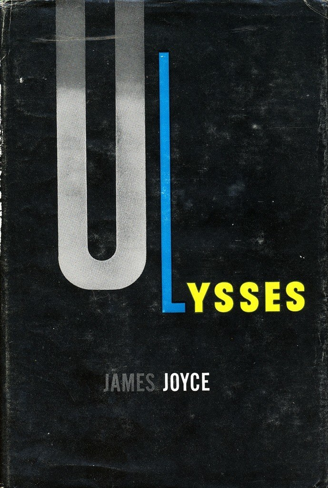
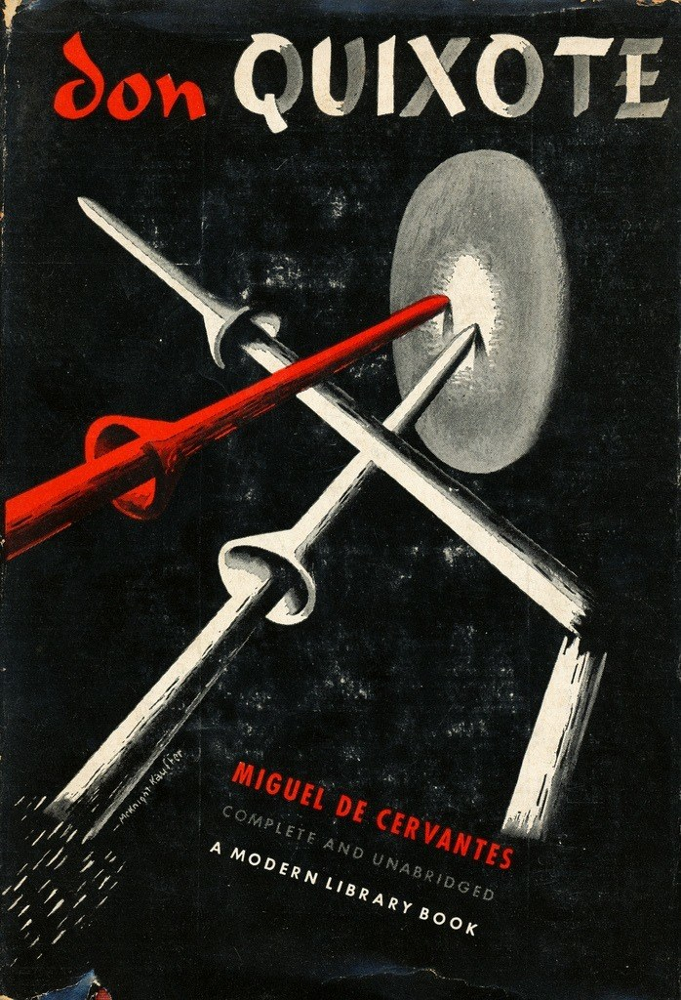

CRVI000140Jutaro Itoh - 企業空間のサイン — Corporate Signs (Designing Signs Vol. 2)
Jutaro Itoh and Atsuko Taguchi · Rikuyo-sha
Jutaro Itoh and Atsuko Taguchi · Rikuyo-sha

CRVI000185Ernst Reichl - Ulysses
Dust jacket for James Joyce's Ulysses · Random House, New York · 1934
Dust jacket for James Joyce's Ulysses · Random House, New York · 1934

CRVI000186E. McKnight Kauffer - Ulysses
Dust jacket for James Joyce's Ulysses · Random House, New York · 1946
Dust jacket for James Joyce's Ulysses · Random House, New York · 1946

CRVI000187E. McKnight Kauffer - Point Counter Point
Dust jacket for Aldous Huxley's Point Counter Point · The Modern Library, New York · 1942
Dust jacket for Aldous Huxley's Point Counter Point · The Modern Library, New York · 1942

CRVI000188E. McKnight Kauffer - Don Quixote
Dust jacket for Miguel de Cervantes' Don Quixote · The Modern Library, New York · 1940
Dust jacket for Miguel de Cervantes' Don Quixote · The Modern Library, New York · 1940